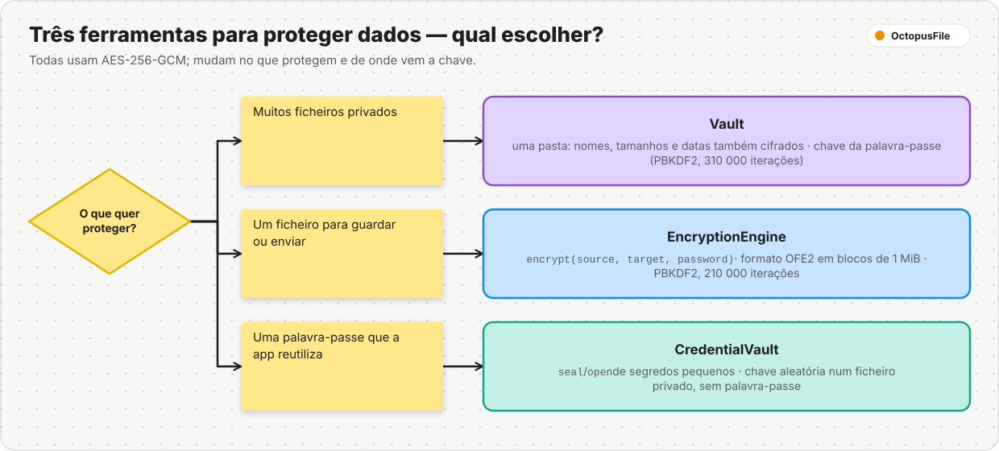
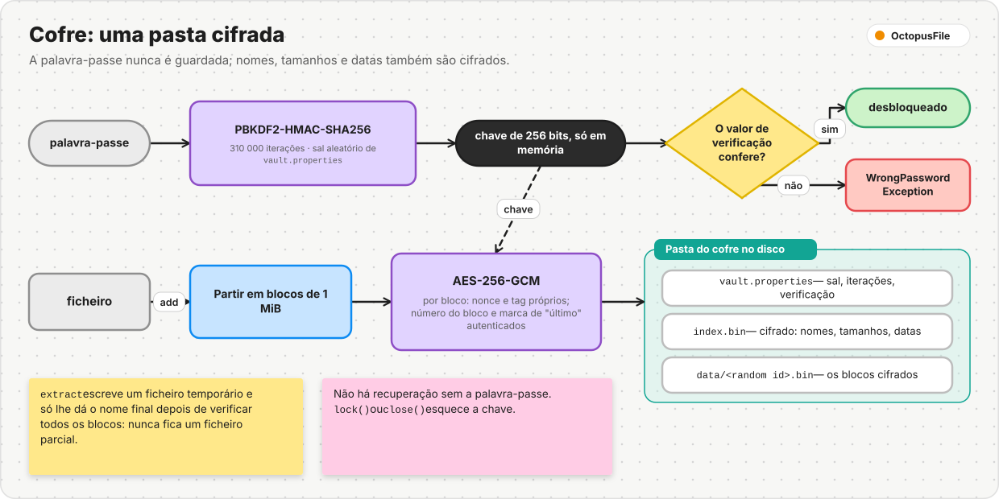
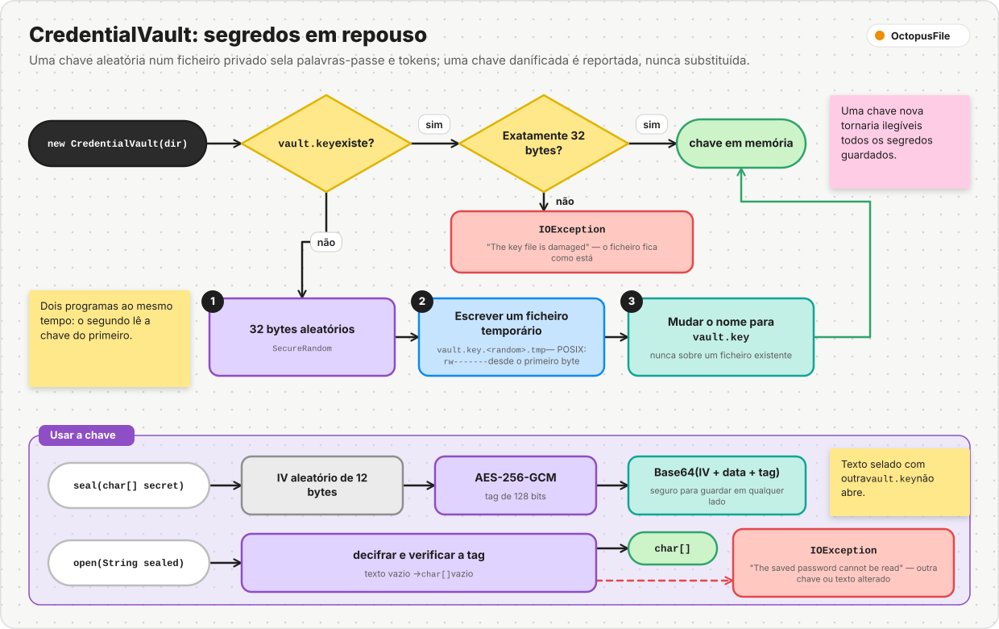
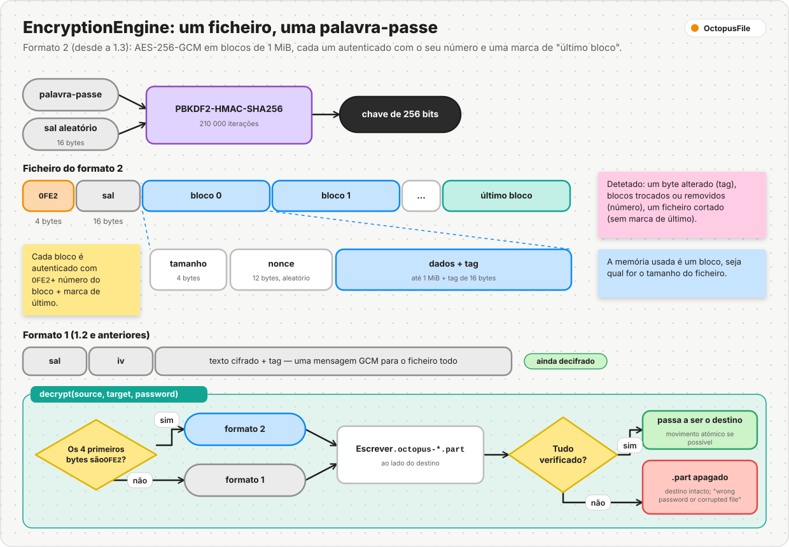

Cofre e segredos

Vault — uma pasta cifrada#

javatry (Vault vault = Vault.create(root, "a long password".toCharArray())) {
vault.add(contract, "Contracts/contract.pdf", null);
}
try (Vault vault = Vault.unlock(root, "a long password".toCharArray())) {
for (Vault.Entry e : vault.list()) {
vault.extract(e, out.resolve(e.name()), null);
}
} catch (Vault.WrongPasswordException ex) {
System.out.println("wrong password");
}
| Cifra | AES-256-GCM, ficheiros em blocos de 1 MiB, cada um com o seu próprio nonce e tag |
| Integridade | o número do bloco e uma marca de "último bloco" são autenticados: reordenar, remover, cortar ou alterar um bloco é detetado e a extração falha sem deixar um ficheiro parcial |
| Chave | PBKDF2-HMAC-SHA256, 310 000 iterações, sal aleatório; a palavra-passe nunca é guardada |
| Nomes | nomes, tamanhos e datas ficam num índice cifrado; no disco existem apenas nomes de ficheiro aleatórios |
| Ficheiros | vault.properties (sal, iterações, verificação), index.bin, data/<id>.bin |
Também: addTree(folder, progress), delete(entry), rename(entry, name), changePassword(newPassword) (volta a cifrar tudo, bloco a bloco em memória: nenhuma cópia em claro é escrita no disco), lock() (esquece a chave).
A alteração da palavra-passe é segura contra uma falha do programa. Os ficheiros são escritos de novo como data/<id>.new ao lado dos antigos; a alteração só conta quando vault.properties é substituído. Se o programa parar antes disso, a palavra-passe antiga continua a abrir tudo e os ficheiros .new são removidos no unlock seguinte; se parar depois, o unlock seguinte (com a nova palavra-passe) termina a deslocação dos ficheiros.
extract escreve num novo ficheiro temporário ao lado do destino e muda-lhe o nome no fim: um ficheiro danificado ou uma chave errada nunca deixam um ficheiro parcial, e um ficheiro existente chamado name.part nunca é tocado. Os nomes são limpos (.. removido), pelo que a extração nunca sai da pasta de destino.
Não há recuperação sem a palavra-passe. Diga-o claramente na sua interface.
CredentialVault — segredos em repouso#

Guarda palavras-passe e tokens cifrados com uma chave aleatória armazenada num ficheiro privado (permissões só para o dono em sistemas POSIX, definidas quando o ficheiro é criado). Um ficheiro de chave danificado é assinalado com uma exceção e nunca é substituído: uma nova chave tornaria ilegível todos os segredos guardados. Use-o para aquilo que a sua aplicação tem de voltar a enviar mais tarde (por exemplo, uma palavra-passe de aplicação WebDAV).
javaCredentialVault secrets = new CredentialVault(dir.resolve("keys"));
String sealed = secrets.seal("app password".toCharArray()); // safe to store
char[] back = secrets.open(sealed);
EncryptionEngine — um ficheiro, uma palavra-passe#

OctopusFile.of().encrypt(source, target, password) / decrypt(...): AES-256-GCM com uma chave PBKDF2 (210 000 iterações). Desde a 1.3 o formato é em blocos de 1 MiB ("OFE2", sal, depois [length][nonce][data + tag] por bloco, cada bloco autenticado com o seu número e uma marca de "último bloco"), pelo que o uso de memória se mantém pequeno para ficheiros grandes e um ficheiro cortado é detetado. Os ficheiros do formato antigo ([salt][iv][ciphertext + tag]) continuam a ser decifrados. O destino só aparece quando tudo foi verificado: uma palavra-passe errada não deixa nenhum ficheiro parcial e não toca num destino existente.
Exemplos compilados e executados peloO desenho criptográfico foi testado (ida e volta, palavras-passe erradas, adulteração, alterações de palavra-passe interrompidas) e revisto na 1.3 (consulte Segurança), mas não foi auditado de forma independente. Mande-o rever antes de confiar nele para dados de elevado valor.
DocExamplesTest